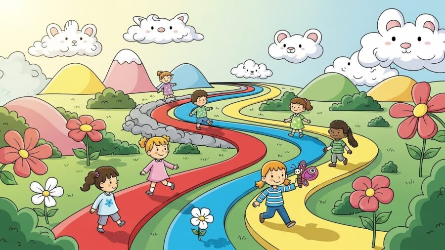
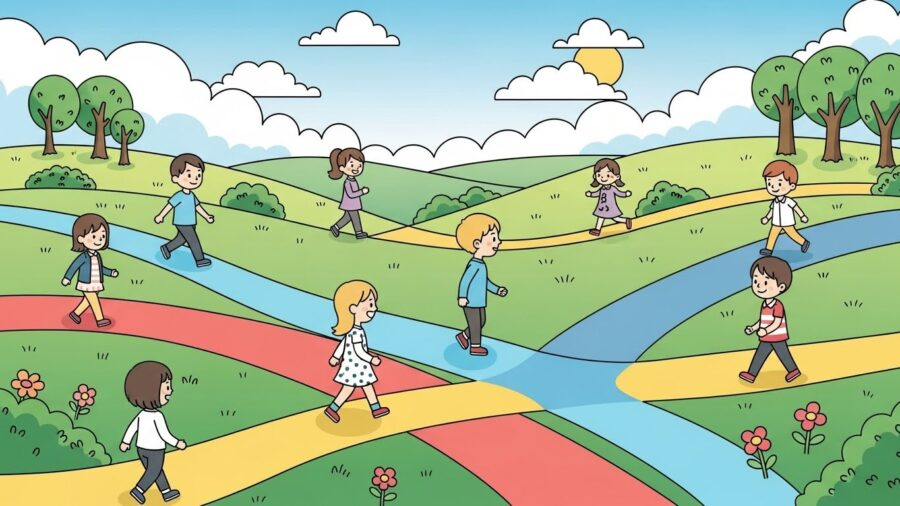

Terapias e Abordagens
Quando você pensa em AUTISMO EM PORTO ALEGRE, talvez imagine protocolos, técnicas, escalas e metodologias. Tudo isso faz parte do processo, mas existe um elemento muito mais profundo, e que transforma completamente o desenvolvimento de uma criança dentro do espectro: a individualidade.
Nenhuma criança é igual à outra.
Nenhuma responde da mesma forma.
Nenhuma aprende no mesmo ritmo.
Nenhuma sente o mundo da mesma maneira.
No HD 360 Moinhos, hoje localizado na Rua Quintino Bocaiúva, 451, Moinhos de Vento, Porto Alegre, testemunhamos diariamente como duas crianças, com o mesmo diagnóstico, mesma idade e até habilidades semelhantes, podem exigir abordagens totalmente diferentes.
E isso muda tudo.
Os resultados mudam.
O vínculo muda.
A evolução muda.
A vida muda.
Este artigo aprofunda, com base científica, evidências atuais e visão prática, por que o tratamento do TEA só funciona de verdade quando respeita a singularidade da criança, e como isso impacta diretamente a forma como tratamos o AUTISMO EM PORTO ALEGRE.
A INDIVIDUALIDADE NO TEA: A BASE CIENTÍFICA QUE SUSTENTA O ATENDIMENTO MODERNO

Por que o autismo não pode ser tratado com “modelo único”?
O TEA é uma condição neurológica caracterizada por padrões distintos nas áreas de:
- comunicação
- interação social
- comportamento
- processamento sensorial
- flexibilidade cognitiva
Mas o que torna o TEA realmente complexo é que a manifestação dessas características é inteiramente única em cada criança.
A ciência chama isso de heterogeneidade clínica.
Em outras palavras:
📌 Não existem dois autismos iguais.
📌 Por isso, não existe um único caminho que sirva para todas as crianças.
E é exatamente aí que entra a força do trabalho realizado pelo HD 360 Moinhos no contexto de AUTISMO EM PORTO ALEGRE: cada intervenção precisa ser construída sob medida.
ENTENDENDO COMO A CRIANÇA FUNCIONA DE VERDADE

Antes de qualquer intervenção, precisamos compreender profundamente:
- como a criança pensa
- como ela aprende
- como ela reage a estímulos
- o que regula ou desregula o comportamento
- quais são suas motivações
- quais habilidades já estão estabelecidas
- quais estão em construção
- onde estão os bloqueios
- como ela percebe o ambiente
No HD 360 Moinhos, utilizamos avaliações multidisciplinares que permitem mapear:
- perfil sensorial
- desenvolvimento motor
- habilidades sociais
- comunicação receptiva e expressiva
- repertório comportamental
- autonomia
- cognição
- interesses específicos
- gatilhos emocionais
Esse mapeamento cria o que chamamos de assinatura individual do TEA, um perfil exclusivo, que permite montar um plano de intervenção totalmente personalizado.
É esse processo que diferencia o HD de qualquer abordagem padronizada e coloca nossa clínica como referência em AUTISMO EM PORTO ALEGRE.
ABORDAGEM INDIVIDUAL NA PRÁTICA, COMO FUNCIONA?
Aqui entra o modelo FAB (Características, Vantagens, Benefícios) aplicado ao TEA.
3.1 Característica (F): Avaliação minuciosa e completa
Uma equipe multidisciplinar mapeia todos os domínios do desenvolvimento.
Vantagem (A):
O plano terapêutico nasce baseado na ciência, não no achismo.
Benefício (B):
Resultados mais rápidos, consistentes e alinhados ao que a criança realmente precisa.
Característica (F): Terapia ABA científica e personalizada
ABA não é uma receita pronta.
É uma ciência capaz de ser moldada conforme cada criança.
Vantagem (A):
Cada objetivo é construído levando em conta o perfil individual.
Benefício (B):
A criança aprende com mais naturalidade e menos resistência.
Característica (F): Rotinas adaptadas
Nenhuma rotina é igual. Cada criança tem seu caminho.
Vantagem (A):
Flexibilidade de intervenção.
Benefício (B):
Menos crises, mais autonomia, mais aprendizado.
Característica (F): Comunicação multimodal
Fala, gesto, imagem, PECS, sinais, tablets, tudo depende do que funciona melhor.
Vantagem (A):
Redução de frustração e melhora no vínculo.
Benefício (B):
A família vivencia comunicação mais clara e funcional.
Característica (F): Intervenção centrada na família
O HD tem um modelo estruturado para orientar pais e cuidadores.
Vantagem (A):
A terapia continua em casa, fortalecendo evolução.
Benefício (B):
A criança avança mais rápido porque vive intervenção diária.
A INDIVIDUALIDADE COMO FORÇA NO AUTISMO EM PORTO ALEGRE
Na prática clínica, observamos diariamente que a evolução no AUTISMO EM PORTO ALEGRE depende de alguns pilares fundamentais:
A motivação da criança é a chave da aprendizagem
Uma criança pode aprender:
- cantando
- correndo
- através de jogos
- com música
- com estímulos visuais
- com rotinas fixas
- com desafios graduais
- com brincadeiras estruturadas
- com atividades práticas
Quando a abordagem respeita a forma como ela se conecta com o mundo, o cérebro responde melhor.
A regulação sensorial é diferente para cada criança
Algumas precisam reduzir estímulos.
Outras precisam aumentar.
Algumas amam espaços abertos.
Outras precisam de ambientes pequenos e silenciosos.
Compreender isso é essencial para qualquer intervenção funcionar.
Cada criança tem um tempo interno
Comparar é um erro.
Forçar é um erro.
Apagar a unicidade é um erro.
A terapia que funciona é aquela que segue o ritmo real da criança, não um cronômetro externo.
COMO A ABORDAGEM INDIVIDUAL MUDA RESULTADOS
Quando a intervenção respeita a singularidade, tudo muda:
- menos crises
- mais comunicação
- mais autonomia
- mais vínculo
- mais segurança emocional
- mais aprendizado
- mais tolerância a frustrações
- mais respostas positivas ao tratamento
- mais qualidade de vida
É isso que faz a diferença no AUTISMO EM PORTO ALEGRE.
É isso que sustenta a prática do HD 360 Moinhos.
É isso que transforma famílias.
O QUE A FAMÍLIA PODE FAZER AGORA
A família tem papel decisivo no processo.
Aqui estão orientações práticas para aplicar imediatamente:
Observe o que funciona para a criança
Como ela aprende?
Como reage?
O que motiva?
O que desregula?
Estabeleça rotinas flexíveis, não rígidas
Rotina não é controle: é previsibilidade que gera segurança.
Use reforço positivo corretamente
O reforço deve ser imediato e proporcional.
Não compare
Cada criança tem seu percurso neurológico singular.
Busque acompanhamento profissional individualizado
E aqui entra o HD 360 Moinhos.
POR QUE O HD 360 MOINHOS É REFERÊNCIA EM AUTISMO EM PORTO ALEGRE
O HD se destaca por:
- avaliação profunda e multidisciplinar
- planejamento individualizado
- intervenção baseada em evidências
- equipe altamente especializada
- orientação intensa à família
- abordagem humanizada
- monitoramento contínuo de progresso
- ambiente acolhedor e estruturado
Tudo isso aplicado diariamente na sede:
📍 Rua Quintino Bocaiúva, 451, Moinhos de Vento, Porto Alegre
A CIÊNCIA É CLARA, A INDIVIDUALIDADE É O CAMINHO
Tratar AUTISMO EM PORTO ALEGRE com resultados reais exige:
- olhar singular
- estratégia personalizada
- flexibilidade terapêutica
- acolhimento
- ciência
- acompanhamento contínuo
É por isso que cada criança é única.
É por isso que cada intervenção precisa ser única.
É por isso que o HD 360 Moinhos existe.
Uma abordagem personalizada não é um detalhe.
É o diferencial que muda destinos.